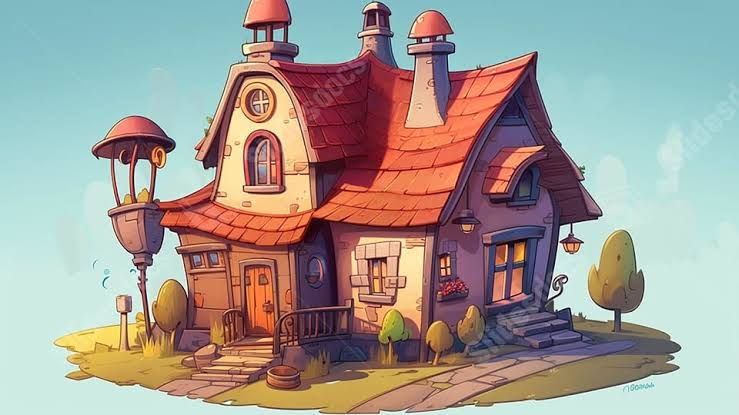

<!DOCTYPE html>
<html translate="no" lang="es">
<head>
  <meta charset="UTF-8">
  <meta name="viewport" content="width=device-width, initial-scale=1.0, maximum-scale=1.0, user-scalable=no">
  <meta name="google" content="notranslate">
  <meta http-equiv="Content-Language" content="es">
  <title>Rooms of a house - Octavo, Séptimo</title>
  <link rel="stylesheet" href="coeduca-core.css">
  <link rel="icon" href="favicon.png" type="image/png">
</head>
<body>
  <div id="app"></div>
  <script src="jspdf.umd.min.js"></script>
  <script src="students.js"></script>
  <script src="rigo.js"></script>
  <script src="coeduca-core.js"></script>
  <script src="coeduca-exercises.js"></script>
  <script src="coeduca-games.js"></script>
  <rigo-mascot></rigo-mascot>
  <script>
    COEDUCA.init({
      container: '#app',
      topic: 'Rooms of a house',
      level: 'Octavo, Séptimo',
      pdfDesign: 'Pastel', 
      colors: { primary: '#FC479D', accent: '#7043B0', bg: '#D5FFD8', cardBg: '#FFFFFF', text: '#1A1A1A' },
      exercises: [
        {
          type: 'note',
          title: 'Parts of the House',
          html: '<div style="text-align: center;"></div><p>Welcome! A house has many different <b>rooms</b> and areas. Each part of the house has a special purpose. For example, we cook delicious food in the <i>kitchen</i>, we rest and sleep in the <i>bedroom</i>, and we watch TV with our family in the <i>living room</i>. Let\'s explore and practice the vocabulary for the rooms of a house!</p>'
        },
        {
          type: 'matchimage',
          title: 'Match the rooms',
          instruction: 'Connect the vocabulary word with the correct picture of the room.',
          dataA: [
            { word: 'Bedroom', image: 'files/cozy_bedroom_with_bed.png' },
            { word: 'Kitchen', image: 'files/modern_kitchen_stove.png' },
            { word: 'Bathroom', image: 'files/clean_bathroom_shower.png' },
            { word: 'Living room', image: 'files/living_room_sofa_tv.png' },
            { word: 'Dining room', image: 'files/dining_room_table_chairs.png' },
            { word: 'Garage', image: 'files/garage_with_red_car.png' }
          ],
          dataB: [
            { word: 'Attic', image: 'files/attic_roof_boxes.png' },
            { word: 'Basement', image: 'files/dark_basement_stairs.png' },
            { word: 'Garden', image: 'files/beautiful_garden_flowers.png' },
            { word: 'Hallway', image: 'files/long_hallway_doors.png' },
            { word: 'Laundry room', image: 'files/laundry_washing_machine.png' },
            { word: 'Balcony', image: 'files/balcony_nice_view.png' }
          ]
        },
        {
          type: 'wordsearch',
          title: 'Find the rooms',
          instruction: 'Find 8 hidden parts of the house in the grid.',
          dataA: {
            words: ['KITCHEN', 'BEDROOM', 'GARAGE', 'GARDEN', 'ATTIC', 'BATHROOM', 'HALLWAY', 'BALCONY'],
            gridSize: 12
          },
          dataB: {
            words: ['BASEMENT', 'LAUNDRY', 'DINING', 'LIVING', 'CLOSET', 'PANTRY', 'OFFICE', 'STAIRS'],
            gridSize: 12
          }
        },
        {
          type: 'dragbank',
          title: 'Complete the sentence',
          instruction: 'Drag the correct room from the bank to complete the sentence.',
          image: 'files/family_in_house.png',
          dataA: {
            sentences: [
              { text: 'My mother is cooking a delicious dinner in the ___', answer: 'kitchen' },
              { text: 'I need to wash my hands and take a shower in the ___', answer: 'bathroom' },
              { text: 'My dad always parks his car in the ___', answer: 'garage' },
              { text: 'I sleep very well every night in my ___', answer: 'bedroom' },
              { text: 'We eat lunch together as a family in the ___', answer: 'dining room' },
              { text: 'I love planting beautiful flowers outside in the ___', answer: 'garden' }
            ],
            bank: ['attic', 'office']
          },
          dataB: {
            sentences: [
              { text: 'We sit on the sofa to watch television in the ___', answer: 'living room' },
              { text: 'I wash my dirty clothes and towels in the ___', answer: 'laundry room' },
              { text: 'My family stores old toys downstairs in the ___', answer: 'basement' },
              { text: 'I hang my jackets and shirts in my ___', answer: 'closet' },
              { text: 'My brother works on his computer in his ___', answer: 'office' },
              { text: 'You have to walk down the long ___ to get to my room.', answer: 'hallway' }
            ],
            bank: ['balcony', 'kitchen']
          }
        },
        {
          type: 'multiplechoice',
          title: 'Where am I?',
          instruction: 'Read the description and choose the room where I am.',
          dataA: [
            { q: 'There is a sofa, a coffee table, and a big TV. Where am I?', options: ['Kitchen', 'Living room', 'Bathroom'], answer: 1 },
            { q: 'I can see a stove, a fridge, and a sink to wash dishes. Where am I?', options: ['Kitchen', 'Garage', 'Attic'], answer: 0 },
            { q: 'There is a large comfortable bed, a wardrobe, and a lamp. Where am I?', options: ['Dining room', 'Bathroom', 'Bedroom'], answer: 2 },
            { q: 'I am taking a relaxing bath with warm water and soap. Where am I?', options: ['Bathroom', 'Garden', 'Living room'], answer: 0 },
            { q: 'I am playing on the green grass with my dog outside the house. Where am I?', options: ['Garage', 'Garden', 'Basement'], answer: 1 },
            { q: 'My parents are eating hot food at a large wooden table. Where are they?', options: ['Dining room', 'Bathroom', 'Attic'], answer: 0 }
          ],
          dataB: [
            { q: 'There is a washing machine, a dryer, and some liquid soap. Where am I?', options: ['Kitchen', 'Laundry room', 'Bedroom'], answer: 1 },
            { q: 'I am fixing my car with some tools. There is some oil on the floor. Where am I?', options: ['Garage', 'Living room', 'Hallway'], answer: 0 },
            { q: 'I am at the very top of the house looking for old boxes in a dusty room. Where am I?', options: ['Basement', 'Kitchen', 'Attic'], answer: 2 },
            { q: 'I am downstairs below the house floor, in a dark and cool room. Where am I?', options: ['Attic', 'Basement', 'Balcony'], answer: 1 },
            { q: 'I am studying for my exams on my computer at a small desk. Where am I?', options: ['Office', 'Bathroom', 'Laundry room'], answer: 0 },
            { q: 'I am standing outside on the second floor, looking at the street below. Where am I?', options: ['Basement', 'Balcony', 'Closet'], answer: 1 }
          ]
        },
        {
          type: 'memory',
          title: 'Match the translation',
          instruction: 'Find the matching pairs of rooms in English and Spanish.',
          dataA: [
            { left: 'Bedroom', right: 'Dormitorio' },
            { left: 'Kitchen', right: 'Cocina' },
            { left: 'Bathroom', right: 'Baño' },
            { left: 'Living room', right: 'Sala' },
            { left: 'Dining room', right: 'Comedor' },
            { left: 'Garden', right: 'Jardín' }
          ],
          dataB: [
            { left: 'Garage', right: 'Cochera' },
            { left: 'Attic', right: 'Ático' },
            { left: 'Basement', right: 'Sótano' },
            { left: 'Laundry room', right: 'Lavandería' },
            { left: 'Office', right: 'Oficina' },
            { left: 'Hallway', right: 'Pasillo' }
          ]
        },
        {
          type: 'categorize',
          title: 'Sort the furniture',
          instruction: 'Place each item of furniture or object in the correct room.',
          image: 'files/furniture_icons.png',
          dataA: {
            categories: ['Kitchen', 'Bathroom'],
            items: [
              { text: 'Fridge', cat: 0 },
              { text: 'Stove', cat: 0 },
              { text: 'Microwave', cat: 0 },
              { text: 'Toilet', cat: 1 },
              { text: 'Shower', cat: 1 },
              { text: 'Toothbrush', cat: 1 }
            ]
          },
          dataB: {
            categories: ['Living room', 'Bedroom'],
            items: [
              { text: 'Sofa', cat: 0 },
              { text: 'Television', cat: 0 },
              { text: 'Coffee table', cat: 0 },
              { text: 'Bed', cat: 1 },
              { text: 'Pillow', cat: 1 },
              { text: 'Wardrobe', cat: 1 }
            ]
          }
        },
        {
          type: 'reorder_letters',
          title: 'Unscramble the rooms',
          instruction: 'Put the scrambled letters in the correct order to spell the room.',
          dataA: [
            { word: 'KITCHEN', hint: 'Where you cook food' },
            { word: 'BEDROOM', hint: 'Where you sleep' },
            { word: 'BATHROOM', hint: 'Where you take a shower' },
            { word: 'GARAGE', hint: 'Where you park the car' },
            { word: 'GARDEN', hint: 'Where plants grow outside' },
            { word: 'ATTIC', hint: 'The room at the very top of the house' }
          ],
          dataB: [
            { word: 'BASEMENT', hint: 'The room under the ground floor' },
            { word: 'OFFICE', hint: 'Where you work or study at a desk' },
            { word: 'LAUNDRY', hint: 'Where you wash your dirty clothes' },
            { word: 'BALCONY', hint: 'Outside area upstairs to look out' },
            { word: 'HALLWAY', hint: 'A corridor connecting different rooms' },
            { word: 'DINING', hint: 'Room to eat meals (___ room)' }
          ]
        }
      ],
      game: { type: 'dino', winScore: 300 }
    });
  </script>
</body>
</html>
